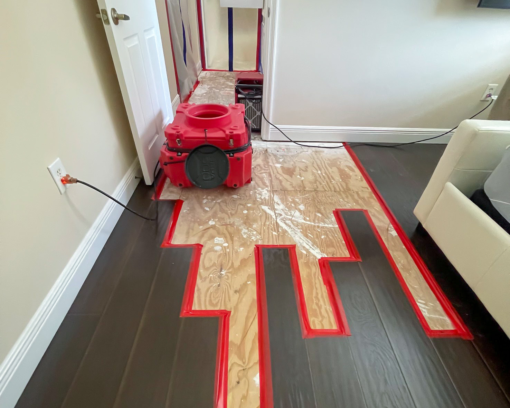

Preparedness
Catastrophe Preparedness: Frontline's Guide for South Florida Residents
The tropical allure of South Florida comes with its unique set of challenges, especially when considering hurricane season and sudden severe weather events.
Read More →